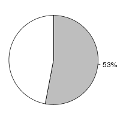
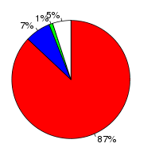
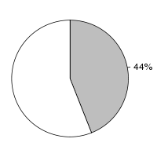

Oryza punctata (Oryza punctata, AVCL00000000) and Oryza meridionalis (Oryza meridionalis, ALNW00000000) were aligned using the LastZ alignment algorithm (LastZ) in Ensembl release 76. Oryza punctata was used as the reference species. After running LastZ, the raw LastZ alignment blocks are chained according to their location in both genomes. During the final netting process, the best sub-chain is chosen in each region on the reference species.
Full list of pairwise alignments| Gap open penalty (O) | 400 |
| Gap extend penalty (E) | 30 |
| HSP threshold (K) | 3000 |
| Threshold for gapped extension (L) | |
| Threshold for alignments between gapped alignment blocks (H) | |
| Masking count (M) | |
| Seed and Transition value (T) | 1 |
| Additional parameters | |
| Scoring matrix (Q) | Default |
Number of alignment blocks: 396302
| Genome coverage(bp) | Coding exon coverage (bp) | |
|---|---|---|
| Oryza punctata |  |  |
| Covered: 210,218,824 out of 393,816,603 | Matches: 34,034,139 out of 39,315,246 | |
| Uncovered: 183,597,779 out of 393,816,603 | Mis-matches: 2,828,569 out of 39,315,246 | |
| Insertions: 516,295 out of 39,315,246 | ||
| Uncovered: 1,936,243 out of 39,315,246 | ||
| Oryza meridionalis |  |
|
| Covered: 146,675,471 out of 335,690,611 | Matches: 28,818,643 out of 35,706,328 | |
| Uncovered: 189,015,140 out of 335,690,611 | Mis-matches: 1,726,995 out of 35,706,328 | |
| Insertions: 426,197 out of 35,706,328 | ||
| Uncovered: 4,734,493 out of 35,706,328 |